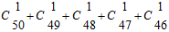

博观而约取，厚积而薄发
博观而约取，厚积而薄发。
可能在说这句话的时候，我也不知道自己想要表达什么。（真的想写个技术类的，分享一下自己的知识，顺便提升一下自己的格调。想想而已。）听着陈旧的许嵩的歌，在图书馆信息阅览室里，用着极不舒服的键盘，在XP系统的word上，写这篇日志（的时候心情是沉重的）。
许嵩的歌不新，却异常喜欢。可能仅仅是耳朵适应了他的歌的节奏和频率，不想再猎新奇。虽然我还年轻。天下雨了，打开窗户就可以感受到雨水带来的降温，和寒意。博观而约取，厚积而薄发，是刚才在意林杂志上看到的一句话。我们不止一次看到过类似这样的话，“我们总是对博学能够侃侃而谈的人感到敬佩，可谁又看到他们十年寒窗门前苦读的光景。”不鸣则已，一鸣惊人？我不屑一笑。
总是希望自己以后可以变成厉害的人，希望现在没有做的一些事情，不会给自己留下遗憾，希望自己不要一无是处，然而。国庆节的假期，回家的回家，旅游的旅游。我不想回家，也没人和我一起旅游，所以，只剩下宅。但是又不甘愿浪费时间。所以，就有一段时间呆在图书馆了。短短几天时间，根本不足够我学习到多少东西。正是有这样的想法，让我对未来倍感迷茫。
我知道自己可以不在乎游玩，没兴趣聚会。可以像暑假一样一下子呆在电脑前两个月。可是每当看到朋友圈的各种动态，就稍微有点按耐不住了。是羡慕吗？是羡慕吧？或者是攀比心理？或者是担心被别人“小看”的心理？（看，我们的生活丰富多彩，你呢？）
看到NCRE三级网络技术的教材，才接触到线程、分页、作业、UPS等概念。看到软考的网络工程师考题，才亲身接触到，有那么多我连名字都看不懂的东西。网上N多人说，NCRE完全没用，软考除了评职称也没什么用。可为什么我却觉得，那些考试的内容都不简单？着实不是突击就可以把证书考下来的程度。
在这个博客网站，不知道可以写些什么内容。写这句话的同时，发现自己终究还是怕出丑。是的，担心博客文章的质量太低，像其他独立博客一样，发发牢骚，写写XXX的配置，贴点福利内容，科学上网方法等。每当看到那样的文章内容，总会觉得一下子就可以知道站长的水平了。什么样的文章，由什么样水平的作者来写。（所以你也应该知道多云转晴hower是个彻头彻尾的萌新小白了吧？）网络上的大牛很多，牛到难以想象。
这段时间，一直以学习web开发自居。学到了什么？每当想，“自己写个小东西出来吧”的时候，会有一个始终回答不了的问题，写什么？入门容易学精难也就这么回事吧，高不成低不就的。想到写一个在线文件管理器，那么，写出来的东西给谁用呢？现在已经不是几年前独立网站的概念盛行，文件管理器还会用爱特的年代了。vps越来越流行，也许未来的某一天都装windows系统了，阿里云现在不就有这样的主机在卖吗。
程序方面，目前就有很多优秀的在线文件管理系统，不管是中文的还是英文的。这些程序有什么功能不完善的地方需要自己改进吗？完全没有。那么，如果自己开始写这样一个程序，除了基本的copy、rename、unzip，都是PHP内置函数的使用，难以扩展它的功能了。界面方面，有好用的jquery插件，配置上就可以用。说的轻描淡写了一点。
站点功能的话，还是按需开发比较好，有时候我们不需要乱七八糟的功能。http://oldblog.smallyu.net/demo/uplaod只有简单的上传功能，不上KB的代码，却够我用用了。（没有安全措施，牛们不要黑我。）其他类型的内容也差不多是这样，在没有实施之前想法就被自己推翻了。
最近迷上一款游戏，王者荣耀。
和LOL比起来，节奏快，打一场时间短，也算是变相的节省时间了。和英魂之刃比起来，画面好，技能炫。当然，王者荣耀是手游，不过我一般在电脑上用模拟器玩。为什么说是迷上呢？以前是不玩网游的。玩过，一点兴趣都没有。（如果保卫萝卜不算网游）后来和一个朋友一起玩王者荣耀。5V5种类的游戏很多。玩了一段时间后，发现这种竞技游戏确实有不少吸引人的地方。
自由度非常高。单机游戏和RGP网游是没法比的。队友和对方分别有5个英雄，一队间不可重复。假如荣耀有50个可选英雄，那么用排列来算，一队间可能的情况有:

这个数是多少？懒得算了。实际上不会有这么多种情况，不可能每个人都有这么多英雄可选，但有这么多种可能的队伍组合。那么，自己一队，对方一队，对战的组合就要二次方了。玩一款游戏，常常因为“玩腻了”不想再玩，单机游戏会找秘籍输命令尽可能看看这个游戏到底“有什么”。但是这个……
合作的精神。个人技术可以秀一时，秀不了一场。合作的好能虐杀对方，不懂合作各打各的人家一个一个也能团死你。那么，其实我还是比较喜欢辅助。不用带兵线，不用打野，工作也就是在队友身边放放技能就好了，还可以心安理得的全场乱跑，辅助队友嘛！被人杀了，我是辅助，血薄！杀的人少？我是辅助！只是排位就不敢那么随便了。
竞技的精神。这本身就是竞技游戏。排位。赢了，还想再赢。输了，不服，想赢回来。感觉和赌博差不多。最怕的也就是挂机了。只要有人挂机，那基本就是输了。暂时没输也就垂死挣扎，只要对方不菜。于是，每当因为有人挂机输了的时候，总觉得特别不爽，不行，还得再来！总不会一直有人挂机吧？对了，还真遇到连3场有人挂机的。
亚瑟是小短手，攻击距离近，除了第三个技能能跳一下，跑路是硬伤，一般带个闪现就挺好。最怕狄仁杰，远距攻击还带减速，见了就跑吧。如果有三技能见了后羿还是能拼一拼的。妲己的减速也厉害，不过战士不应该怕她。
孙悟空据说最强。定位属于刺客和战士。血薄，靠暴击，死得快，打一下就跑的那种。
后羿是热门英雄，经常看见他的身影。身为射手主要输出，远远地打就行了，三技能用处不详，什么时候都可以放，但不知道什么时候能够发挥好作用。
蔡文姬比较讨人喜欢，（我单身久了？）因为可爱。
孙斌看样子是S4的主角了。（现在是正S4呢吧？）辅助很强，一技能眩晕，二技能是2s的加速，三技能就挺酷的，时光炸弹，到后期冷却也不长，伤害不高，减速能力很强，团的时候丢对位置能把对方*死。
……
另一款也不错的游戏，贪吃蛇大作战。
这要不是单机游戏，估计它的火爆程度不会低于荣耀。规则很简单，生存。不是长大，是生存。前几天玩slither.io的时候，不断有一个想法冒出来：“蛇蛇大作战杀气太重了，我不敢再玩。”暴走蛇蛇也好，supersnake.io也好，总会有人不断想要杀掉你，你自己在玩的时候也会不断想要杀掉其它的蛇，尤其是大的，因为长得快嘛，积分很容易就上去。如果抢银行变成一种合法的行为，谁不愿意去抢？
就这么乱乱地写写吧，没毛病。
前几天杂志上看到一篇文章，论题是“你相信男女之间有纯洁的友谊吗？”我不信。
我不只不相信男女之间没有友谊，还有男男之间，女女之间，所以说，我不相信友谊。没有永恒的友谊，只有永恒的利益，不是空穴来风。同时，我还看到一篇文章，论题是，“世界上的感情，都是一种仪式。”大概意思是说，仪式其实很重要。有仪式不一定有感情，但要有感情就应该有仪式，以表达，“我在乎你，我需要你”这类的含义。因为对方需要这样的仪式来相信你。
看到这样的文章，会引起我一些思考，也会让我想起一些事情，所以有时候需要看看杂志。比如，上面的话题，我不得不想起一个大学同学。
我很喜欢的一个朋友。